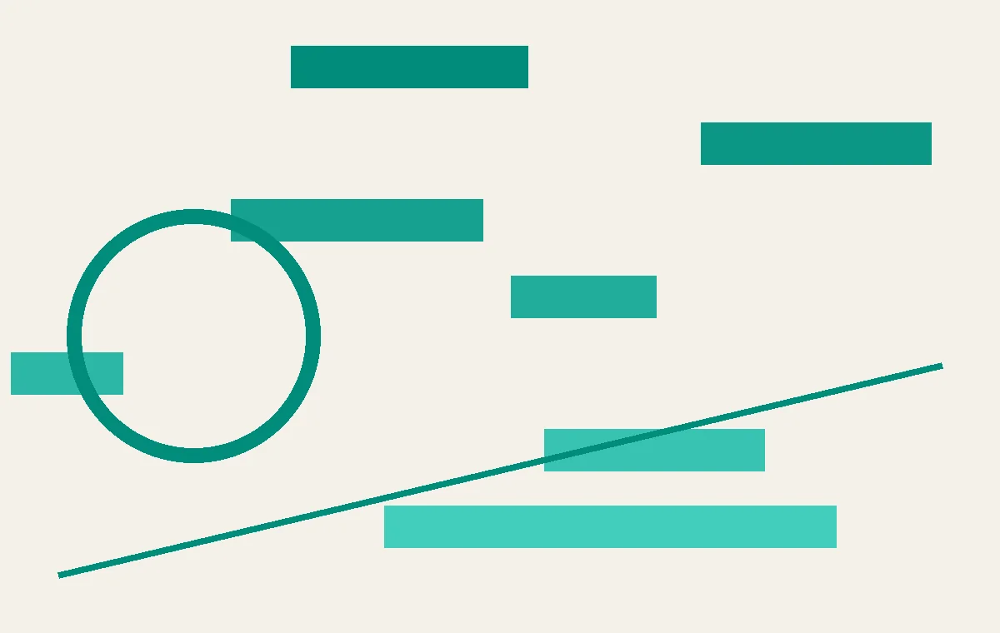
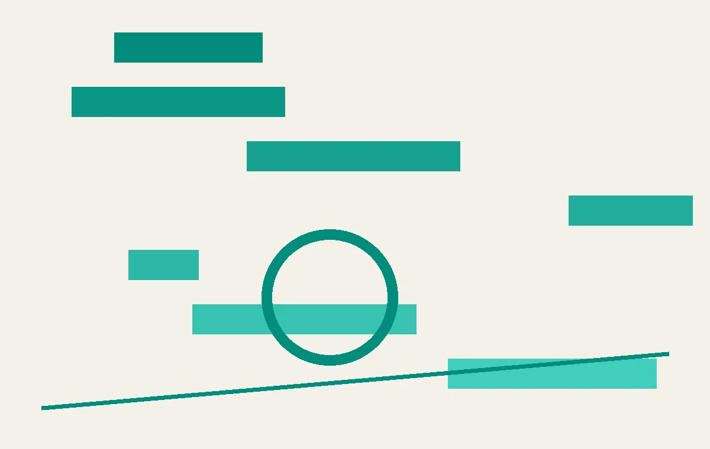

01
图书馆里的“反AI”工作坊：用户开始主动选择退出
费城图书馆的Charlie Bailey办了一场名为“Avoiding AI”的工作坊，教人们关闭手机上的AI功能，现场座无虚席。
在费城南区一间布置着儿童地毯的图书馆教室里，二十多位成年人掏出手机，跟着讲台上的Charlie Bailey一步步操作：关闭Apple Intelligence，禁用Gemini。这不是什么极客聚会，而是Bailey创办的“Avoiding AI”工作坊——一个专门教人如何从数字生活中剔除AI工具的系列课程。Bailey告诉TechCrunch，灵感来自他感受到的普遍挫败感：“人们觉得AI工具被强行塞进生活，到处都是我们没要求过的东西。”工作坊从AI聊天机器人如何工作讲起，解释为什么有人想用、为什么有人想躲，然后逐一演示主流平台和设备的关闭步骤。这个系列已经病毒式传播，反映出一种正在积聚的社会情绪：当AI成为默认设置，一部分用户开始主动选择退出。
这场工作坊的背景是，过去两年间，苹果、谷歌、微软等科技巨头将AI功能深度嵌入操作系统和默认应用。用户往往在系统更新后突然发现，相册、短信、浏览器里多出了AI生成的摘要、建议或编辑功能。对于技术爱好者来说，这些功能可能很酷；但对于注重隐私、偏好简洁或对AI不信任的用户来说，它们更像是强塞进来的“数字装修”。Bailey的工作坊之所以能吸引二十多人挤进一间儿童教室，恰恰说明这种情绪不是个例。
从技术机制上看，关闭AI功能并不总是简单的开关切换。Apple Intelligence涉及多个系统级组件的联动，Gemini则与Google账号和搜索深度绑定。用户需要进入多层菜单，有时还要区分“关闭建议”和“完全禁用”之间的细微差别。Bailey的工作坊实际上是在填补科技公司留下的“用户教育真空”——既然产品没有提供清晰的退出路径，那就由社区来提供。
这件事对普通人的影响是直接的：如果你对AI功能感到困扰，现在有了一个可复用的操作指南。更重要的是，它传递了一个信号——用户对AI的接受不是自动的，科技公司需要为“选择退出”提供同样流畅的体验。对于产品经理和决策者来说，这提醒了一个常被忽视的原则：可选择性本身就是用户体验的一部分。当用户感到被控制时，再强大的功能也会引发反弹。
伊恩的观察
技术普及从来不是单向的。当主流科技公司把AI作为默认功能推送时，一部分用户正在用脚投票。对于产品经理和决策者来说，这提醒了一个常被忽视的原则：可选择性本身就是用户体验的一部分。
02
一条掉落的电线，暴露了AI数据中心的电网软肋
华盛顿特区外一条电线故障，导致超过3吉瓦的数据中心负载同时离线，电压波动从弗吉尼亚蔓延到芝加哥。
本周，华盛顿特区外一条电线掉落。正常情况下，电网只需几秒就能恢复，但这次花了超过十分钟——因为超过3吉瓦的数据中心几乎同时停止取电。据物联网传感器网络公司Ting Labs收集的数据，事件导致从北弗吉尼亚到芝加哥的PJM电网电压尖峰。虽然没有造成停电，但整个区域灯光闪烁。北弗吉尼亚是全球数据中心最密集的地区，这次事件是一个预演：随着AI训练和推理负载的爆发式增长，数据中心的电力需求变得既庞大又波动剧烈。一条电线故障就能引发区域级电网扰动，说明现有基础设施的设计并未考虑这种“巨量负载同步行为”。
要理解这个问题的严重性，需要先了解数据中心的电力特性。传统数据中心虽然耗电量大，但负载相对稳定，且通常配备UPS（不间断电源）和备用发电机，能够在电网波动时平滑过渡。然而，AI数据中心，尤其是训练集群，对电力质量要求极高，且负载模式更加“脉冲式”——训练任务启动和停止时，功率可以在几分钟内变化数百兆瓦。当大量数据中心位于同一电网区域，且采用相似的电力管理策略时，一个外部扰动（如电线故障）可能导致它们同时触发保护机制，集体断开负载，造成电网瞬间失去大量负荷，引发电压骤升。
这次事件中，3吉瓦的负载在几秒内消失，相当于一个大型核电站突然停机。PJM电网虽然最终稳定下来，但电压波动范围之大，说明系统裕度正在被压缩。解决方案包括分布式储能、负载调度协议以及更智能的电网边缘控制，但每一项都需要跨行业协调和巨额投资。例如，数据中心可以部署大型电池储能系统，在电网扰动时提供缓冲；或者与电网运营商签订“需求响应”协议，在故障时有序降载而非同时断开。但这些措施会增加数据中心的建设和运营成本，最终可能转嫁给AI服务的消费者。
对于普通居民，这意味着未来几年可能会更频繁地遇到灯光闪烁，甚至局部停电。对于电网运营商和数据中心开发商来说，这意味着一笔新的基础设施成本正在浮出水面。AI的繁荣不仅仅是算力的竞赛，更是电力的竞赛。当一条电线就能让区域电网颤抖时，我们不得不重新思考：AI的能源账单，到底由谁来付？
伊恩的观察
AI数据中心的电力需求正在从“量大”变成“不稳定”。对于电网运营商和数据中心开发商来说，这意味着一笔新的基础设施成本正在浮出水面。对于普通居民，这意味着未来几年可能会更频繁地遇到灯光闪烁，甚至局部停电。
03
Opus 5发布：性能翻倍，价格减半，但竞争远未结束
Anthropic发布Opus 5模型，据称性能超越Fable 5，定价仅为后者一半，引发社区热议。
在经历了数周的泄露和猜测后，Anthropic正式发布了Opus 5。根据量子位的报道和早期用户反馈，Opus 5在多项基准测试中表现优于此前被认为领先的Fable 5模型，而API定价仅为Fable 5的一半。有网友形容“差点从椅子上摔下来”，暗示性能提升超出预期。值得注意的是，Anthropic同时精简了Claude Code的系统提示词，表明模型本身的理解和指令遵循能力有了质的提升。Opus 5的发布时机耐人寻味：它出现在AI用户开始出现“疲劳”和“反弹”的节点上。更强的模型和更低的价格固然能刺激采用，但也可能加剧用户对“AI无处不在”的抵触。
从技术角度看，Opus 5的进步主要体现在三个方面：推理能力、指令遵循和效率。早期测试显示，它在数学推理、代码生成和长文本理解等任务上接近甚至超越Fable 5，而参数量和推理成本却更低。这得益于Anthropic在模型架构和训练方法上的优化，包括更高效的注意力机制和更好的数据筛选策略。精简后的Claude Code系统提示词意味着模型能够更准确地理解用户意图，减少了需要人工调校的“提示工程”工作量。对于开发者来说，这意味着更低的集成门槛和更快的迭代速度。
然而，Opus 5的定价策略也揭示了AI模型市场的竞争格局正在变化。Fable 5作为上一代标杆，定价较高，而Anthropic以一半的价格提供相当或更好的性能，直接打响了价格战。这对于中小企业和独立开发者是利好，因为他们可以以更低成本获得顶级AI能力。但这也意味着模型提供商需要寻找新的盈利模式，比如通过增值服务、企业定制或平台绑定来维持收入。
对于普通用户，Opus 5的发布意味着AI功能将更深入地嵌入日常工具。例如，智能助手、写作工具、编程辅助等产品可能会迅速升级到Opus 5，提供更准确和自然的交互。但与此同时，退出的难度也在增加——当AI变得更好用、更便宜时，用户更难拒绝它的嵌入。这恰恰与图书馆里的“Avoiding AI”工作坊形成了有趣的对照：技术供给侧的进步与用户需求侧的抵制同时发生，AI的普及从来不是一条直线。
伊恩的观察
模型性能竞赛远未结束，但价格战已经开始。对于开发者来说，这意味着更低的门槛和更快的迭代；对于普通用户，则意味着AI功能将更深入地嵌入日常工具，退出的难度也在增加。
04
吴恩达开源桌面Agent：AI同事从聊天走向行动
AI教育先驱吴恩达发布了一款100%开源的桌面Agent，能够自主执行文件操作、网页浏览等任务。

吴恩达，这位以Coursera和深度学习课程闻名的AI教育家，最近发布了一个个人桌面Agent项目，并完全开源。根据量子位的报道，这个Agent不只是聊天或列待办清单，而是能直接操作桌面应用、管理文件、浏览网页并执行多步骤任务。它代表了一类正在兴起的“AI同事”产品：从被动回答问题转向主动完成工作流程。开源意味着社区可以自由修改和扩展，这降低了企业部署的门槛，但也带来了安全性和可控性的挑战。吴恩达的参与为这个方向注入了学术严谨性和教育生态资源。
桌面Agent的技术核心在于“行动能力”。传统的AI助手（如Siri、Alexa）主要处理语音指令和简单查询，而桌面Agent需要理解图形界面、模拟鼠标键盘操作、管理文件系统，并协调多个应用程序。这要求模型具备视觉理解（识别屏幕元素）、规划能力（分解多步骤任务）和错误恢复机制。吴恩达的项目基于最新的多模态大模型，能够“看到”屏幕截图并决定下一步操作。例如，它可以自动下载附件、填写表单、整理文件夹，甚至跨应用复制粘贴数据。
开源策略是吴恩达的一贯风格。通过公开代码和模型权重，他希望加速桌面Agent的普及和迭代。开发者可以基于该项目构建定制化的Agent，比如针对财务、设计或编程的专用助手。但开源也带来了风险：恶意用户可能利用Agent执行自动化攻击、窃取数据或绕过安全限制。因此，项目内置了权限控制和安全沙箱，但最终安全性取决于使用者的配置。
对于知识工作者，桌面Agent的实用价值很高。想象一下，你只需说“整理本周所有项目文档，按客户分类，并生成摘要”，Agent就能自动完成。这可以节省大量重复性操作的时间。但同时也需要警惕：当Agent拥有操作桌面的权限时，隐私和误操作的风险也随之增加。吴恩达的项目提供了一个起点，但真正的落地还需要企业级的安全审计和用户培训。未来半年内，我们可能会看到这类产品开始替代部分重复性桌面操作，尤其是在数据录入、报告生成和流程自动化领域。
伊恩的观察
桌面Agent是AI从“工具”走向“协作者”的关键一步。开源策略将加速这一进程，但用户需要关注权限管理和数据隐私。对于知识工作者，未来半年内可能会看到这类产品开始替代部分重复性桌面操作。
05
具身智能的清醒剂：美国也没成熟，中国何必当“中国版XX”
Physical Intelligence在RSS 2026会议上指出，北美具身智能公司离成熟还有距离，中国公司不应盲目对标。

在RSS 2026会议上，具身智能明星公司Physical Intelligence（PI）的代表发表了一番引人深思的言论：包括PI在内的北美头部具身智能公司，离成熟都还有不短的距离；整个领域尚未出现真正的奠基性工作。PI同时指出，中国真正的优势在于机器人硬件制造，而美国也没有成熟答案。因此，中国公司不必急于将自己定位为“中国版XX”。这番表态来自行业内部，分量不同于外部评论。它揭示了一个现实：尽管具身智能获得了大量资本和媒体关注，但底层技术——如泛化操作、环境理解、实时控制——仍处于早期阶段。中国公司在硬件成本控制和供应链整合上的优势，可能比盲目模仿美国软件路线更有价值。
具身智能（Embodied AI）指的是能够感知环境并物理行动的AI系统，典型代表是机器人。过去两年，随着大模型和多模态技术的进步，具身智能成为资本热点，涌现出一批创业公司，其中不少被冠以“中国版波士顿动力”或“中国版PI”的标签。然而，PI的发言戳破了这个泡沫：即使是美国最领先的公司，也还没有解决泛化操作和实时决策的核心难题。例如，让机器人在非结构化环境中自主完成“拿起杯子倒水”这样的任务，仍然需要大量预设和调试，远未达到“通用”水平。
中国在机器人硬件制造上的优势是实实在在的。从电机、减速器到传感器，中国拥有完整的供应链和成本控制能力。这使得中国公司能够以更低的价格生产出性能可靠的机器人本体。然而，在软件算法、训练数据和系统集成方面，中国与美国仍有差距。PI的提醒是：与其花精力包装“中国版XX”的故事，不如把资源投入到硬件创新和场景落地中。例如，在仓储物流、制造业巡检等垂直领域，中国公司可以凭借硬件优势快速实现商业化，而不是追逐不成熟的通用机器人梦想。
对于投资者和创业者来说，这是一个回归理性的信号。具身智能的长期前景毋庸置疑，但短期内的技术瓶颈和商业化难度被高估了。与其追逐“中国版XX”的叙事，不如深耕硬件制造和场景落地的真实壁垒。对于普通人，这意味着机器人进入家庭和日常生活的时间表可能会比预期更慢，但特定场景（如工厂、仓库）的自动化会持续推进。
伊恩的观察
具身智能的泡沫正在被行业内部戳破。对于投资者和创业者来说，这是一个回归理性的信号：与其追逐“中国版XX”的叙事，不如深耕硬件制造和场景落地的真实壁垒。
无障碍文字记录
伊恩 今天聊几个看似不相关、实则紧密咬合的事。一边是图书馆里教人关掉AI的工作坊，一边是数据中心让电网闪了一下；另一边，Opus 5半价发布、吴恩达开源桌面Agent。这些事放在一起，你会发现AI的产业叙事正在分岔：有人想逃，有人想修，有人想让它更便宜、更开放。
伊恩 先从费城一间图书馆说起。Charlie Bailey是南费城的图书管理员，他办了一个叫“Avoiding AI”的工作坊，教人关掉手机里的Apple Intelligence和Gemini。你可能会想，这有什么好教的？但20多个成年人挤在儿童活动室里，认真记步骤——因为他们觉得AI不是被请进来的，而是被塞进来的。Bailey说，他感受到的是人们的挫败感：AI工具突然出现在生活的每个角落，你根本没选。这个工作坊在社交媒体上爆了，说明这种情绪不是少数。
Bailey的工作坊时长一小时，开头先讲AI聊天机器人和其他消费级AI工具的工作原理——它们怎么训练、怎么生成回答、为什么有时候会胡说八道。然后他解释为什么有人想用这些工具，比如自动生成邮件、整理笔记、快速搜索；也解释为什么有人想避开，比如隐私担忧、对输出不信任、或者单纯不想被算法引导。最后是实操环节：他在投影仪上一步步演示，在苹果手机上关闭Apple Intelligence，在安卓手机上关闭Gemini，在浏览器里禁用AI搜索摘要。
这些操作本身不复杂，但很多人不知道入口在哪，或者压根没意识到这些功能默认是打开的。苹果在iOS 18里把Apple Intelligence集成进系统，谷歌在Pixel和三星手机上预装Gemini，微软在Edge和Windows里塞了Copilot。用户要么主动去设置里翻找，要么忍受一个自己不需要的助手常驻通知栏。Bailey的工作坊填补的就是这个信息差。
这件事折射出一个更大的趋势：科技公司正把AI从“可选功能”变成“默认配置”。对普通用户来说，代价首先是学习成本——你得花时间搞懂怎么关掉一个你从未要求过的功能。其次是隐私：Apple Intelligence的部分处理在设备端，但Gemini和Copilot依赖云端，你的输入会被发送到服务器。最后是体验：AI摘要可能替代你习惯的搜索结果，自动补全可能改写你的文字，而你未必想要这些“帮助”。
我的判断是，这种反弹不会阻止AI嵌入产品，但会倒逼公司提供更清晰的开关和更简单的关闭路径。目前，关闭流程往往藏在多层菜单里，甚至需要登录账户。如果“Avoiding AI”这类工作坊持续走红，科技公司可能不得不像GDPR时代那样，重新设计用户首次启动时的选择界面。毕竟，当用户需要去图书馆才能学会关掉一个功能，说明产品设计本身出了问题。
听众 所以这些人是不信任AI，还是单纯嫌烦？
伊恩 更多是“被剥夺选择权”的愤怒。他们不是不用技术，而是不想被默认开启、不想隐私被拿去做训练。这其实是科技巨头长期“先推后问”的反噬。
伊恩 本周，华盛顿特区外一根电线断了。按说电网几秒就能恢复，但这次花了十多分钟——因为超过3千兆瓦的数据中心几乎同时停止用电，导致电压从北弗吉尼亚一路飙升到芝加哥，灯都闪了。北弗吉尼亚是全球数据中心最密集的地方，这个事件暴露了一个结构性问题：AI负载太大、太集中，而且响应太快。电网是为平稳负荷设计的，不是为这种“全有或全无”的巨兽准备的。
先看发生了什么。一根电线断了，数据中心的电源瞬间中断，它们几乎同时从电网断开。3千兆瓦的负荷突然消失，相当于几个核电站的出力瞬间没了，电压随之飙升。好在没有造成停电，但灯光闪烁已经说明系统在极限边缘。
为什么AI数据中心会引发这种问题？传统数据中心负载相对稳定，但AI训练和推理的功耗波动极大。训练任务可能持续数小时满负荷，一旦中断或完成，负载骤降。更关键的是，这些数据中心往往集中在同一区域——北弗吉尼亚的数据中心密度全球第一，它们共享同一个电网节点。一旦该节点出问题，所有数据中心同时响应，形成“共振”。
这个问题的代价是什么？首先是电网稳定性。PJM电网覆盖从华盛顿到芝加哥的广大区域，一次电压波动就可能影响数百万家庭和企业。其次，数据中心运营商需要为这种不稳定性买单——要么自建备用电源，要么向电网支付更高的调节费用。据估算，仅北弗吉尼亚的数据中心每年因电网不稳定造成的额外成本就达数亿美元。
对普通人来说，最直接的感受是灯光闪烁，但更深层的影响是电费。电网为了应对这种瞬时大负荷变化，需要预留更多旋转备用容量，这部分成本最终会分摊到所有用户头上。此外，如果类似事件频繁发生，可能导致局部限电或电价上涨。
这个事件揭示了一个产业趋势：AI数据中心的电力需求正在从“量变”走向“质变”。过去我们担心的是数据中心耗电太多，现在更要担心它们用电太“任性”。解决方案包括：在数据中心部署储能系统，平滑功率波动；将数据中心分散布局，避免过度集中；以及升级电网的智能调度能力，让电网能更快响应这种瞬时变化。但所有这些都需要时间和投资。
我的判断是：AI数据中心的电力问题不会自行消失，它会成为制约AI扩张的一个硬约束。未来两年，我们可能会看到更多类似的电网事件，推动监管机构出台更严格的数据中心并网标准。对于科技公司来说，电力基础设施的可靠性将和芯片算力一样，成为核心竞争力的一部分。
听众 那怎么修？让数据中心自己配储能？
伊恩 对，一种方案是数据中心自带电池或飞轮储能，在电网波动时做缓冲。另一种是让它们更分散，别都挤在一个区域。但根本问题是，AI的电力需求增长太快，电网规划跟不上。
伊恩 想象一下，你花一半的钱，买到了性能更强的产品——这在AI模型市场，正在成为现实。7月25日，Anthropic正式发布了Opus 5，一款被网友称为“炸场”的大语言模型。它的定价只有前代Fable 5的一半，但实测表现却让不少人惊呼“差点从椅子上摔下来”。
先看事实：Opus 5在多项基准测试中超越了Fable 5，尤其是在代码生成、数学推理和长文本理解上，优势明显。价格却从每百万token 15美元降到了7.5美元。这并非简单的降价促销，而是模型架构优化的结果。Anthropic在训练中采用了更高效的稀疏注意力机制和知识蒸馏技术，用更少的计算资源实现了更强的性能。
技术门槛的变化值得关注。过去，顶级模型的高昂成本把很多中小开发者挡在门外。现在，Opus 5的半价策略意味着，更多创业公司、独立开发者甚至学术机构，都能用上接近前沿水平的AI能力。这可能会加速应用层的创新，比如更智能的客服、更精准的医疗辅助工具，或者更自然的语音助手。
但成本下降的另一面是竞争加剧。对于依赖模型API的初创公司，这是利好；但对于那些靠卖高价模型授权盈利的公司，压力会更大。同时，模型能力提升后，Anthropic甚至精简了Claude Code的系统提示词——这说明更强的模型不再需要繁琐的指令就能理解用户意图，用户体验会更流畅。
对普通人来说，这意味着你很快就能用到更便宜、更聪明的AI服务。比如，你订阅的写作助手可能价格不变但能力翻倍，或者免费版的功能会显著提升。不过，也要警惕“AI疲劳”——当模型变得无处不在，我们更需要学会如何有选择地使用，而不是被工具裹挟。
Opus 5的发布，是AI产业“能力提升、成本下降”趋势的一个缩影。它告诉我们，技术红利正在从少数巨头扩散到整个生态。但真正的赢家，是那些能利用低成本模型解决真实问题的人，而不是盲目追逐参数的人。
听众 半价性能还更好，那Fable 5是不是要凉了？
伊恩 不一定。Fable 5有生态和品牌优势，但Opus 5的定价会迫使它降价或加速迭代。最终受益的是用户，能用更低成本获得更好能力。
伊恩 吴恩达，那个教过几百万人机器学习的AI教育大佬，最近亲自下场做了个“数字同事”。这个项目叫个人桌面Agent，完全开源，代码、模型、文档全部公开。它不是又一个聊天机器人，而是一个能直接操作你电脑的智能体——打开浏览器、管理文件、填写表单、自动执行重复操作。
具体来说，这个Agent基于一个轻量级模型，运行在本地，通过计算机视觉和API接口控制桌面。比如，你让它“整理今天收到的所有发票邮件”，它会自动登录邮箱，下载附件，按日期和金额分类存入文件夹。或者，你让它“帮我填这份入职表”，它能识别表单字段，从你的简历里提取信息逐项填写。整个过程不需要你手动点击任何东西。
吴恩达在博客里解释，他做这个项目的动机是：大模型的能力越来越强，但大多数人仍然只在聊天窗口里用它们。真正的生产力提升，需要AI能直接操作我们日常使用的软件和系统。桌面Agent就是这种尝试——把AI从“对话者”变成“操作者”。
技术门槛在哪里？首先是安全性：一个能控制你电脑的Agent，如果被恶意利用，后果很严重。吴恩达的方案是让所有操作都经过本地沙盒，并且用户可以随时中断。其次是可靠性：桌面环境复杂多变，Agent需要准确识别按钮、菜单、弹窗，稍有偏差就会出错。目前这个版本在常见应用上表现不错，但遇到不规范的界面仍会卡壳。
成本方面，开源意味着零授权费，你只需要一台带GPU的电脑就能运行。相比企业级RPA软件动辄数万元的年费，这个方案几乎免费。但你需要一定的技术能力来部署和调试——吴恩达提供了详细的文档，但离“一键安装”还有距离。
对普通人来说，这意味着什么？如果你经常处理重复的电脑操作——比如整理文件、批量填写表格、自动回复邮件——这个Agent能帮你省下大量时间。但如果你只是偶尔用电脑，它的价值有限。更深远的影响是，它展示了AI落地的另一种路径：不是更大的模型，而是更聪明的工具。
我的判断是：桌面Agent是AI从“玩具”走向“工具”的关键一步。吴恩达选择开源，等于把标准交到了社区手里。接下来你会看到各种定制版本——有人会把它做成财务助手，有人会做成设计助手，有人会集成到企业系统里。真正的赢家不是模型公司，而是那些能把Agent用到具体场景里的开发者。输家？可能是传统的RPA厂商和那些还在卖“AI对话”概念的公司。
当然，风险也存在。一个能操作你电脑的AI，一旦被黑客控制，就是完美的数字间谍。安全防护必须跟上。另外，如果Agent出错，比如误删了文件，责任算谁的？这些问题没有标准答案。但方向已经明确：AI的下一个战场，在桌面。
伊恩 今天聊一个产业视角的判断。在RSS 2026机器人顶会上，Physical Intelligence的人说，美国具身智能离成熟还远，中国公司不必老叫自己“中国版XX”。中国真正的优势是硬件制造。
先看事实。Physical Intelligence是北美头部具身智能公司之一，他们的创始人在会上明确表示，整个领域还没出现真正的奠基性工作。这意味着，无论是波士顿动力还是特斯拉的Optimus，目前都处于早期探索阶段。而中国公司在宣传时，常常对标这些美国公司，称自己为“中国版波士顿动力”或“中国版Figure AI”。
这个判断的机制在于：具身智能的核心是“硬件+软件+场景”的闭环。美国公司在软件算法上有积累，但硬件可靠性和成本控制一直是短板。而中国在机器人硬件制造上拥有完整的供应链和规模优势——从电机、减速器到传感器，中国厂商的产能和成本都领先。当大家都在追求“通用机器人”时，硬件的可靠性和成本才是真正的护城河。
代价是什么？如果中国公司一味模仿美国路径，可能会忽视自身优势。比如，美国公司擅长用大量资金堆算法，但中国公司更适合在制造端做优化。模仿意味着放弃差异化，最终陷入价格战。
对普通人来说，这个判断意味着未来几年，你可能会看到更多中国本土的机器人品牌，而不是“中国版XX”。这些机器人可能更便宜、更耐用，但软件能力需要时间追赶。
我的判断是：具身智能赛道还处在“硬件先行”阶段。中国公司与其做“中国版XX”，不如在硬件制造上建立壁垒，等软件成熟时再反超。这就像智能手机时代，中国先靠制造崛起，再有了华为、小米的软件生态。机器人行业也会走类似的路。
所以，下次看到一家机器人公司自称“中国版XX”，你可以多问一句：它的硬件是自己造的吗？成本控制得住吗？如果答案是肯定的，那它可能比美国同行更接近商业化。
伊恩 串一下今天的故事。三条线：一是社会对AI的抗拒，从图书馆工作坊到电网隐患，说明技术落地不能只考虑功能，还要考虑社会接受度和基础设施承载力。二是模型本身在变强变便宜，Opus 5和桌面Agent都在降低AI的使用门槛。三是产业定位，无论是机器人还是AI，中国公司需要找到自己的差异化路径。
伊恩 AI的浪潮不会停，但它会越来越分化。有人选择关掉它，有人靠它降本增效，有人用它重构基础设施。作为普通人，你至少可以做到：知道自己用的是什么，以及它值不值得。今天就到这里，我是伊恩，明天见。